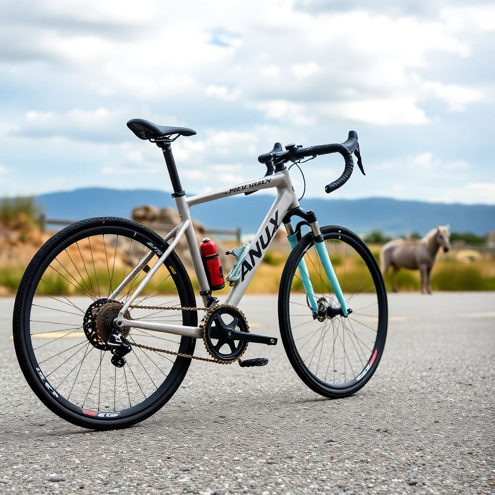
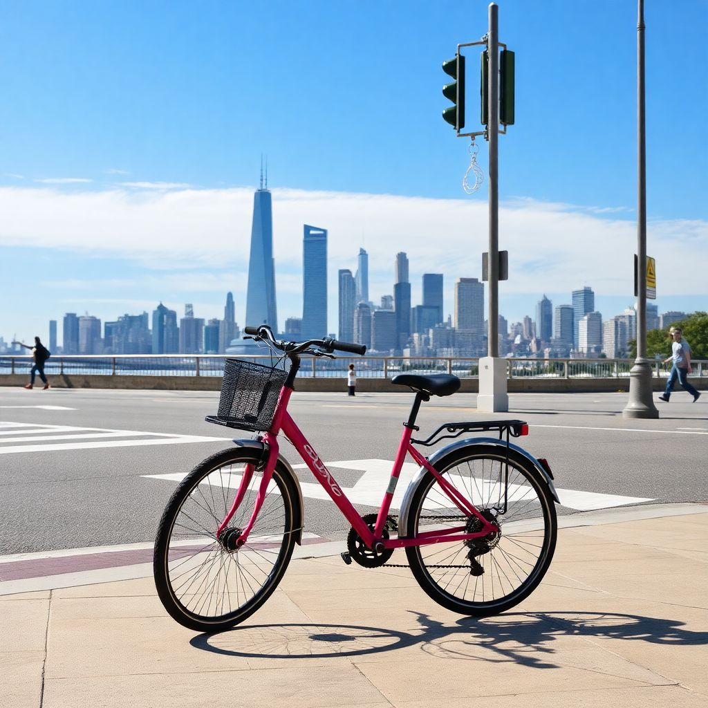

Типи велосипедів
Існує багато типів велосипедів, кожен із яких призначений для різних цілей:
-
Шосейні велосипеди – для швидкої їзди по асфальту.

-
Гірські велосипеди – для їзди по пересіченій місцевості.

-
Міські велосипеди – для комфортного пересування містом.
